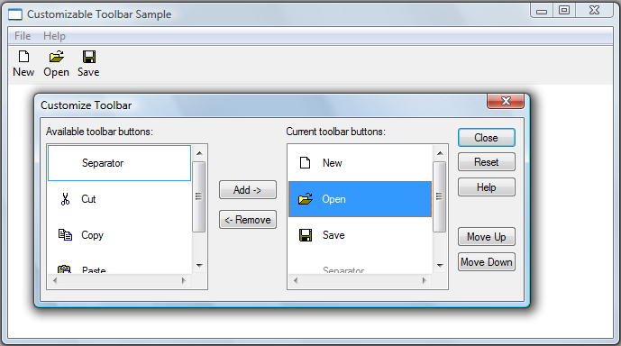

Most Windows-based applications use toolbar controls to provide users with convenient access to the program functionality. However, static toolbars have some shortcomings—such as too little space to effectively display all the available tools. The solution to this problem is to make your application's toolbars user-customizable. Then, users can choose to display only the tools they need, and they can organize them in a way that suits their personal workstyle.
[!Note]
Toolbars in dialog boxes cannot be customized.
Â
To enable customization, include the CCS_ADJUSTABLE common controls style flag when you create the toolbar control. There are two basic approaches to customization:
You can implement either approach or both, depending on the needs of the application. Neither of these two approaches to customization provides a built-in mechanism, such as a Cancel or Undo button, to return the toolbar to its former state. You must explicitly use the toolbar control API to store the toolbar's precustomization state. If necessary, you can later use this stored information to restore the toolbar to its original state.
The customization dialog box is provided by the toolbar control to give users a simple way to add, move, or delete tools. Users can launch it by double-clicking the toolbar. Applications can launch the customization dialog box programmatically by sending the toolbar control a TB_CUSTOMIZE message.
The following illustration shows an example of the toolbar customization dialog box.

The tools in the list box on the right are those currently on the toolbar. Initially, this list will contain the tools that you specify when you create the toolbar. The list box in the left contains the tools that are available to add to the toolbar. Your application is responsible for populating that list (other than with the Separator, which appears automatically).
The toolbar control notifies your application that it is launching a customization dialog box by sending its parent window a TBN_BEGINADJUST notification code followed by a TBN_INITCUSTOMIZE notification code. In most cases, the application does not need to respond to these notification codes. However, if you do not want the Customize Toolbar dialog box to display a Help button, handle TBN_INITCUSTOMIZE by returning TBNRF_HIDEHELP.
The toolbar control then collects the information it needs to initialize the dialog box by sending three series of notification codes, in the following order:
The dialog box is then displayed, and the user can begin to customize the toolbar.
When the dialog box is open, your application can receive a variety of notification codes, depending on the user's actions:
After the dialog box is destroyed, your application will receive a TBN_ENDADJUST notification code.
The following code example shows one way to implement toolbar customization.
// The buttons are stored in an array of TBBUTTON structures.
//
// Constants such as STD_FILENEW are identifiers for the
// built-in bitmaps that have already been assigned as the toolbar's
// image list.
//
// Constants such as IDM_NEW are application-defined command identifiers.
TBBUTTON allButtons[] =
{
{ MAKELONG(STD_FILENEW, ImageListID), IDM_NEW, TBSTATE_ENABLED, 0, {0}, 0, (INT_PTR)L"New" },
{ MAKELONG(STD_FILEOPEN, ImageListID), IDM_OPEN, TBSTATE_ENABLED, 0, {0}, 0, (INT_PTR)L"Open"},
{ MAKELONG(STD_FILESAVE, ImageListID), IDM_SAVE, TBSTATE_ENABLED, 0, {0}, 0, (INT_PTR)L"Save"},
{ MAKELONG(STD_CUT, ImageListID), IDM_CUT, TBSTATE_ENABLED, 0, {0}, 0, (INT_PTR)L"Cut" },
{ MAKELONG(STD_COPY, ImageListID), IDM_COPY, TBSTATE_ENABLED, 0, {0}, 0, (INT_PTR)L"Copy"},
{ MAKELONG(STD_PASTE, ImageListID), IDM_PASTE, TBSTATE_ENABLED, 0, {0}, 0, (INT_PTR)L"Paste"}
};
// The following appears in the window's message handler.
case WM_NOTIFY:
{
switch (((LPNMHDR)lParam)->code)
{
case TBN_GETBUTTONINFO:
{
LPTBNOTIFY lpTbNotify = (LPTBNOTIFY)lParam;
// Pass the next button from the array. There is no need to filter out buttons
// that are already used—they will be ignored.
int buttonCount = sizeof(allButtons) / sizeof(TBBUTTON);
if (lpTbNotify->iItem < buttonCount)
{
lpTbNotify->tbButton = allButtons[lpTbNotify->iItem];
return TRUE;
}
else
{
return FALSE; // No more buttons.
}
}
break;
case TBN_QUERYINSERT:
case TBN_QUERYDELETE:
return TRUE;
}
}
Users can also rearrange the buttons on a toolbar by pressing the SHIFT key and dragging the button to another location. The drag-and-drop process is handled automatically by the toolbar control. It displays a ghost image of the button as it is dragged, and rearranges the toolbar after it is dropped. Users cannot add buttons in this way, but they can delete a button by dropping it off the toolbar.
Although the toolbar control normally does this operation automatically, it also sends your application two notification codes: TBN_QUERYDELETE and TBN_QUERYINSERT. To control the drag-and-drop process, handle these notification codes as follows:
If the user attempts to drag a button without also pressing the SHIFT key, the toolbar control will not handle the drag-and-drop operation. However, it will send your application a TBN_BEGINDRAG notification code to indicate the start of a drag operation, and a TBN_ENDDRAG notification code to indicate the end. If you want to enable this form of drag-and-drop, your application must handle these notification codes, provide the necessary user interface, and modify the toolbar to reflect any changes.
In the process of customizing a toolbar, your application might need to save information so that you can restore the toolbar to its original state. To initiate saving or restoring a toolbar state, send the toolbar control a TB_SAVERESTORE message with the wParam set to TRUE. The wParam value of this message specifies whether you are requesting a save or a restore operation. After the message is sent, there are two ways to handle the save/restore operation:
Toolbar states are saved in a data stream that consists of blocks of Shell-defined data alternating with blocks of application-defined data. One data block of each type is stored for each button, along with an optional block of global data that applications can place at the beginning of the stream. During the save process, your TBN_SAVE handler adds the application-defined blocks to the data stream. During the restore process, the TBN_RESTORE handler reads each block and gives the Shell the information it needs to reconstruct the toolbar.
The first TBN_SAVE notification code is sent at the beginning of the save process. Before any buttons are saved, the members of the NMTBSAVE structure are set as shown in the following table.
| Member | Setting |
|---|---|
| iItem | –1 |
| cbData | The amount of memory needed for Shell-defined data. |
| cButtons | The number of buttons. |
| pData | The calculated amount of memory needed for application-defined data. Typically, you include some global data, plus data for each button. Add that value to cbData and allocate enough memory to pData to hold it all. |
| pCurrent | The first unused byte in the data stream. If you do not require global toolbar information, set pCurrent = pData so that it points to the start of the data stream. If you do require global toolbar information, store it at pData, then set pCurrent to the beginning of the unused portion of the data stream before returning. |
Â
If you want to add some global toolbar information, put it at the start of the data stream. Advance pCurrent to the end of the global data so that it points to the beginning of the unused portion of the data stream, and return.
After you return, the Shell starts saving button information. It adds the Shell-defined data for the first button at pCurrent and then advances pCurrent to the start of the unused portion.
After each button is saved, a TBN_SAVE notification code is sent and NMTBSAVE is returned with these members set as follows.
| Member | Setting |
|---|---|
| iItem | The zero-based index of the button number. |
| pCurrent | A pointer to the first unused byte in the data stream. If you want to store additional information about the button, store it at the location pointed to by pCurrent and update pCurrent to point to the first unused portion of the data stream after that. |
| TBBUTTON | A TBBUTTON structure that describes the button that is being saved. |
Â
When you receive the notification code, you should extract any button-specific information you need from TBBUTTON. Remember that when you add a button, you can use the dwData member of TBBUTTON to hold application-specific data. Load your data into the data stream at pCurrent. Advance pCurrent to the end of your data, again pointing to the beginning of the unused portion of the stream, and return.
The Shell then goes to the next button, adds its information to pData, advances pCurrent, loads TBBUTTON, and sends another TBN_SAVE notification code. This process continues until all buttons are saved.
The restore process basically reverses the save process. At the beginning, your application will receive a TBN_RESTORE notification code with the iItem member of the NMTBRESTORE structure set to –1. The cbData member is set to the size of pData, and cButtons is set to the number of buttons.
Your notification handler should extract the global information that was placed at the beginning of pData during the save, and advance pCurrent to the start of the first block of Shell-defined data. Set cBytesPerRecord to the size of the data blocks you used to save the button data. Set cButtons to the number of buttons, and return.
The next NMTBRESTORE is for the first button. The pCurrent member points to the start of your first block of button data, and iItem is set to the button index. Extract that data and advance pCurrent. Load the data into TBBUTTON, and return. To omit a button from the restored toolbar, set the idCommand member of TBBUTTON to zero. The Shell will repeat the process for the remaining buttons. In addition to the NMTBSAVE and NMTBRESTORE messages, you can also use messages such as TBN_RESET to save and restore a toolbar.
The following code example saves a toolbar before it is customized, and restores it if the application receives a TBN_RESET message.
int i;
LPNMHDR lpnmhdr;
static int nResetCount;
static LPTBBUTTON lpSaveButtons;
LPARAM lParam;
switch( lpnmhdr->code)
{
case TBN_BEGINADJUST: // Begin customizing the toolbar.
{
LPTBNOTIFY lpTB = (LPTBNOTIFY)lparam;
// Allocate memory for the button information.
nResetCount = SendMessage(lpTB->hdr.hwndFrom, TB_BUTTONCOUNT, 0, 0);
lpSaveButtons = (LPTBBUTTON)GlobalAlloc(GPTR, sizeof(TBBUTTON) * nResetCount);
// In case the user presses reset, save the current configuration
// so the original toolbar can be restored.
for(i = 0; i < nResetCount; i++)
{
SendMessage(lpTB->hdr.hwndFrom,
TB_GETBUTTON, i,
(LPARAM)(lpSaveButtons + i));
}
}
return TRUE;
case TBN_RESET:
{
LPTBNOTIFY lpTB = (LPTBNOTIFY)lparam;
int nCount, i;
// Remove all of the existing buttons, starting with the last one.
nCount = SendMessage(lpTB->hdr.hwndFrom, TB_BUTTONCOUNT, 0, 0);
for(i = nCount - 1; i >= 0; i--)
{
SendMessage(lpTB->hdr.hwndFrom, TB_DELETEBUTTON, i, 0);
}
SendMessage(lpTB->hdr.hwndFrom, // Restore the saved buttons.
TB_ADDBUTTONS,
(WPARAM)nResetCount,
(LPARAM)lpSaveButtons);
}
return TRUE;
case TBN_ENDADJUST: // Free up the memory you allocated.
GlobalFree((HGLOBAL)lpSaveButtons);
return TRUE;
}
Toolbar Standard Button Image Index Values
Windows common controls demo (CppWindowsCommonControls)
Â
Â